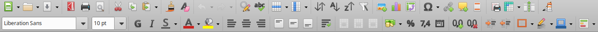
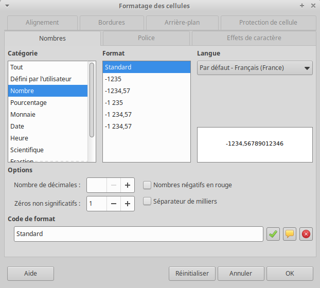
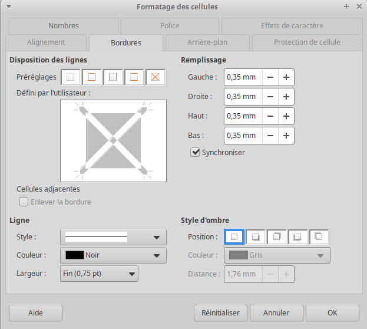
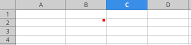
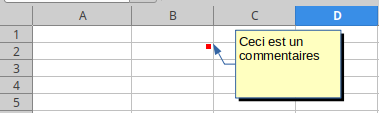
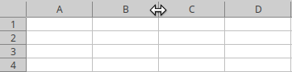
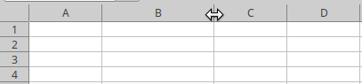
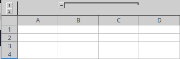
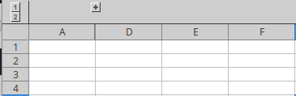

CM2 : Mise en forme
Barre d'outils
La barre d'outils intègre de nombreux raccourcis permettant d'éditer la feuille de calcul sans passer par les menus :

💡 Survoler une icône de la barre d'outil affiche une courte description, ainsi qu'éventuellement un raccourcit clavier. Retenir les raccourcit claviers de fonctionnalités fréquemment utilisés permet à terme d'augmenter sa productivité.
💡 La barre d'outils est personnalisable via le menu .
Mise en forme du contenu
Comme dans les logiciels de traitement de texte, il est possible de mettre en forme le contenu d'une cellule, i.e. de modifier sa police d'écriture, la taille de la police, mettre en gras, en italique, souligner, changer la couleur du texte, changer la couleur du fond :
Alignement du contenu
Il est aussi possible d'aligner le contenu d'une cellule horizontalement et verticalement :
💡 Ajuster le contenu permet de retourner à la ligne lorsque le contenu dépasse la largeur de la cellule.
Format du contenu
Il est aussi possible de modifier le format des nombres affichés en les affichant comme une monnaie, un pourcentage, une date, en ajoutant ou retirant des décimales :
💡 De nombreux autres formats sont disponibles dans le menu :

Bordures
Il est aussi possible de fixer les bordures des cellules, leur style (non implémenté ici), ainsi que leur couleur :
💡 Vous pouvez définir l'épaisseur de la bordure dans le menu :

Retraits
Les retraits permettent de décaler le contenu des cellules :
Opérations de formats sur plusieurs cellules
Motivation...Copie
Effacer le format
Plages
Style
Insertions
Il est aussi possible d'insérer des images, des diagrammes (cf suite cours), des tables dynamiques (cf suites cours), des caractères spéciaux, des liens hypertextes ainsi que des commentaires :
Commentaires
Un commentaire apparaît comme un carré rouge en haut à droite d'une cellule. Au survol de la cellule, le commentaire apparaît :


Lignes et colonnes
Redimensionner les lignes et colonnes
Il est possible de redimensionner une ligne (ou colonne) en plaçant le curseur entre deux lignes (ou colonnes). Double-cliquer redimensionnera la ligne (ou colonne) de manière optimale quand clicker et déplacer vous permet de choisir la dimension désirée :


Fusionner et scinder des cellules
Il est aussi possible de fusionner des cellules pour n'en faire qu'une. Les cellules fusionnées peuvent être scindées (i.e. défusionnées) :
Cacher les lignes/colonnes
Certaines lignes (ou colonnes) peuvent être moins importantes que d'autres, e.g. :
- détails
- calculs intermédiaires
- données initiales
Pour garder la feuille de calcul lisible, on peut masquer les lignes (ou colonnes) sélectionnées grâce à F12 (Ctrl+F12 pour dégrouper) :

